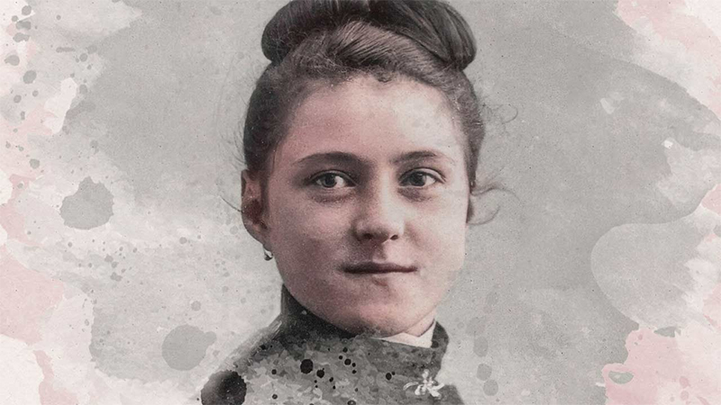
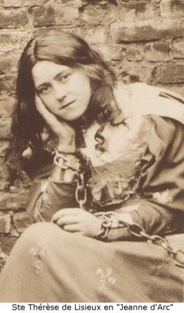
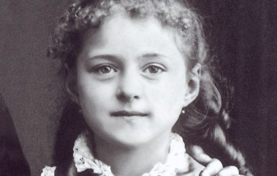
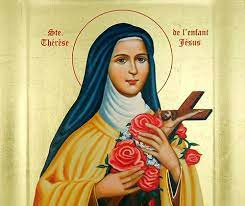
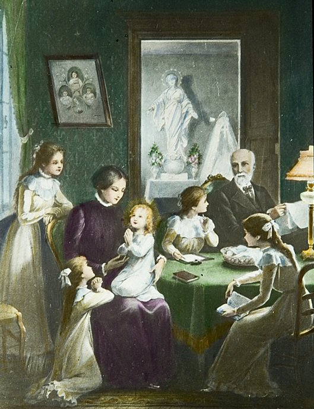
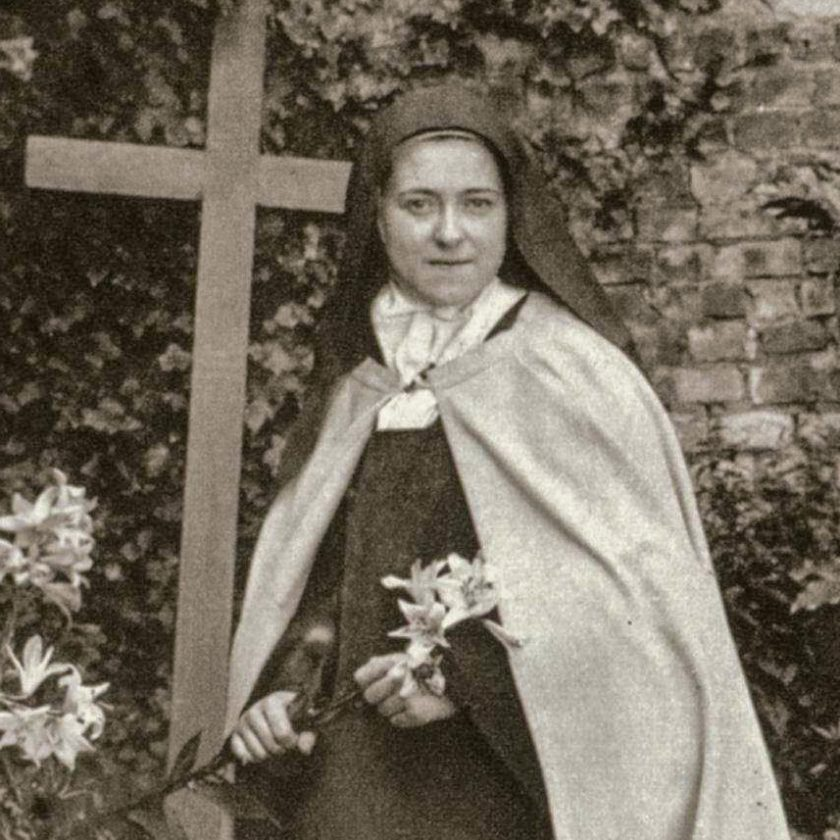
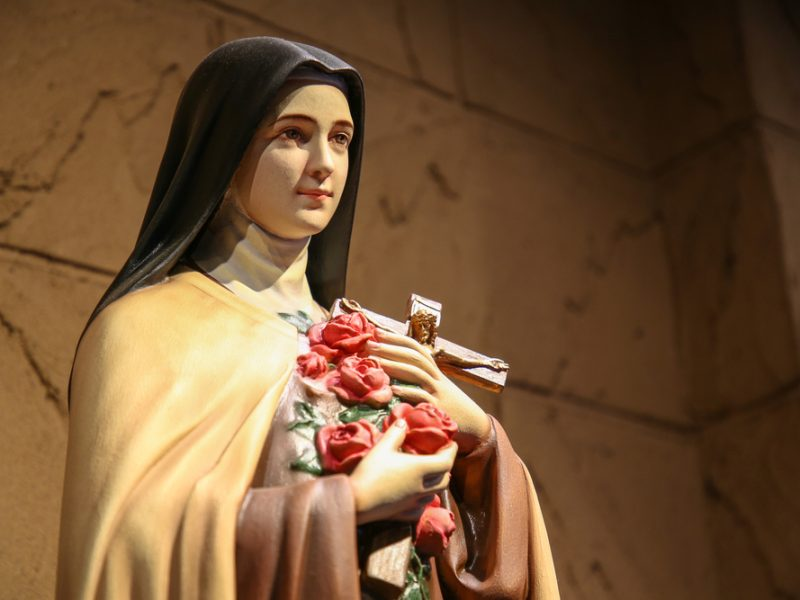
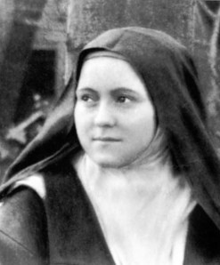

Marie-Françoise-Thérèse Martin
A vida de Marie-Françoise-Thérèse Martin
Santa Teresinha, também conhecida como Santa Teresa de Lisieux ou Santa Teresa do Menino Jesus e da Sagrada Face, foi uma freira carmelita e uma das grandes santas da Igreja Católica. Ela nasceu como Marie-Françoise-Thérèse Martin em 2 de janeiro de 1873, em Alençon, na França. Ela foi a última dos nove filhos de Louis Martin e Zélie Guérin, ambos canonizados pela Igreja Católica em 18 de outubro de 2015.
Desde muito jovem, Thérèse mostrou um profundo amor por Deus e um desejo de dedicar sua vida ao serviço religioso. Com apenas 15 anos, após uma peregrinação a Roma com seu pai, ela se sentiu chamada a se tornar freira carmelita, apesar de sua pouca idade. No entanto, ela enfrentou dificuldades para ingressar no convento, pois não atendia à idade mínima exigida pelas regras da época.
Em 9 de abril de 1888, aos 15 anos e meio, ela ingressou no Carmelo de Lisieux, uma ordem contemplativa de freiras carmelitas em Lisieux, na Normandia. Lá, ela tomou o nome de Irmã Teresa do Menino Jesus e da Sagrada Face. Santa Teresinha é conhecida por sua "pequena via" espiritual, que enfatiza a simplicidade, humildade e confiança total na misericórdia de Deus. Ela acreditava que mesmo nas tarefas mais simples e comuns da vida cotidiana, era possível encontrar e agradar a Deus.
Durante seus nove anos de vida religiosa, Santa Teresinha sofreu com a tuberculose e enfrentou desafios emocionais e espirituais. No entanto, ela se manteve firmemente dedicada a sua "pequena via" e ao amor a Deus. Após sua morte prematura em 30 de setembro de 1897, aos 24 anos, sua autobiografia, intitulada "História de uma Alma" ("L'Histoire d'une Âme"), foi publicada e ganhou muita atenção.
A espiritualidade de Santa Teresinha teve um impacto profundo na Igreja Católica e além, inspirando muitos fiéis com sua abordagem simples e confiante em relação à fé. Ela foi canonizada pelo Papa Pio XI em 17 de maio de 1925. Além disso, em 1997, o Papa João Paulo II a proclamou Doutora da Igreja, tornando-a uma das três únicas mulheres a receber essa honra, juntamente com Santa Catarina de Sena e Santa Teresa de Ávila.
Santa Teresinha é considerada a padroeira das missões e, embora tenha vivido uma vida breve e aparentemente comum, seu exemplo e ensinamentos continuam a inspirar milhões de pessoas ao redor do mundo, e ela é uma das santas mais populares e queridas da história da Igreja Católica.
Linha do Tempo
-
1873
2 de janeiro: Nasce Marie-Françoise-Thérèse Martin em Alençon, França.
-
1877
Sua mãe, Zélie Guérin, falece em 28 de agosto.
-
1883
Aos 10 anos, Santa Teresinha sofre uma grave doença que ela acredita ter sido curada pela Virgem Maria, após um milagre obtido através de uma relíquia da Santa Teresinha do Menino Jesus.
-
1884
Santa Teresinha recebe sua Primeira Comunhão em 8 de maio.
-
1884
Após a morte de sua irmã Paulina (Madre Agnès do Santíssimo Sacramento) em 28 de julho, ela decide entrar no convento das Carmelitas em Lisieux.
-
1888
9 de abril: Entra no Carmelo de Lisieux, aos 15 anos, tomando o nome de Irmã Teresa do Menino Jesus e da Sagrada Face.
-
1888
8 de setembro: Professa seus votos religiosos.
-
1890
Santa Teresinha escreve sua autobiografia "História de uma Alma".
-
1896
Santa Teresinha fica gravemente doente de tuberculose.
-
1897
30 de setembro: Santa Teresinha falece aos 24 anos, após uma longa batalha contra a tuberculose.
-
1897
Publicação póstuma de "História de uma Alma", que atrai a atenção e devoção de muitos leitores.
-
1925
17 de maio: Santa Teresinha é canonizada pelo Papa Pio XI.
-
1997
Proclamada Doutora da Igreja pelo Papa João Paulo II em 19 de outubro, em reconhecimento à sua profunda espiritualidade e contribuições para a teologia e a vida espiritual.
A Infância Espiritual
O conceito de "infância espiritual" na Igreja remonta aos tempos de Jesus, que ensinava que seus discípulos deveriam se tornar como crianças para entrar no Reino dos céus. Santa Teresinha do Menino Jesus e da Sagrada Face, uma jovem carmelita do século XIX, desenvolveu e viveu essa espiritualidade. A "infância espiritual" é uma busca de Deus e santidade, reconhecendo-se pequeno diante de Deus e dependendo totalmente Dele. Santa Teresinha comparava-se a um passarinho em relação a Deus, buscando imitar as águias (grandes santos), mesmo sendo pequena e incapaz de voar para o Sol brilhante de Deus. A "infância espiritual" também envolve não dar demasiada importância aos próprios pecados e não desanimar diante dos erros. Essa experiência de Santa Teresinha incentiva os cristãos a se tornarem como crianças, pois o Reino dos céus pertence a quem se assemelha a elas.
Galeria de Fotos








Referência
Esta página teve como referência a live do Pe. Paulo Ricardo, onde ele fala da vida de Santa Teresinha e da sua
"pequena via".
Também podemos conhecer mais da vida de Santa Teresinha em outras páginas como, Canção Nova e Wikipedia.